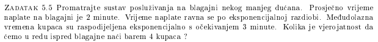
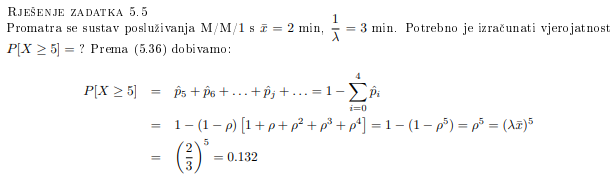

Otkud najbolje učiti za MI?
estoyAqui auditorne+skripta
jel ima netko rijesene auditorne mozda?
Jesu li objavljene sve prezentacije 2. ciklusa? Nekako mi se cini malo, ko da nesto fali😅
ljama_glama meni se i ovo “malo” cini malo previse 😅
Moze netko pliz napisati koja je suma ovog reda od n=0 do m? (k^n)/n!
Ne bi li u ovom zadatku trebalo racunati P[X>=4]?  
šta je ovaj qtsplus?
karan_fil alat koji treba instalirati (za Excel), mozes ga preuzeti u materijalima u mapi s programskom podrskom
ljama_glama samo microsoftov excel ili ima neka verzija i za nas koji nismo na windowsima?
Zasto je u zadatku 6.7 r=2, a ne r=4?
je li rjesenje prvog zadatka iz ovog oglednog ispita: hipereksponencijalna s parametrom lambda=100
VolimStopala🇻🇦🇭🇷 i R=8?
Zna li netko 7. zadatak iz auditornih?
ljama_glama da naravno
Ako netko nezna rijesiti 9. zadatak iz oglednog, to je sustav s dvije klase i prioritetnim posluživanjem. objašnjenje je na: 31:10
Doduše mi to gradivo nismo obradili pa ne vjerujem da će nama doći
VolimStopala🇻🇦🇭🇷 u qtsplus to je: Model category: priority, i uzmete ovaj prvi ponuđeni model
VolimStopala🇻🇦🇭🇷 uzmete ovaj prvi ponuđeni model
nemojte uzet prvi model uzmite drugi model po redu od vrha